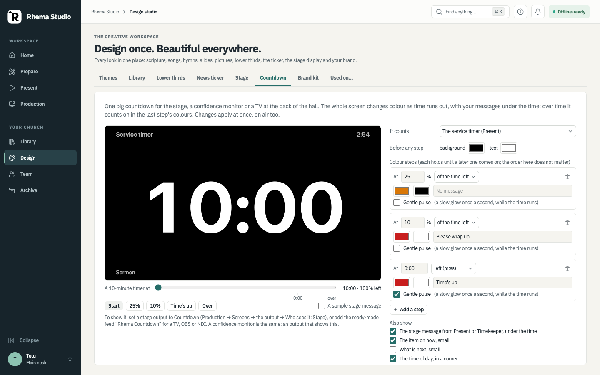

VISIBLE IN THE APP
Desktop workspaces
Repository UI captures show Home, Prepare, Present, Design, and Production surfaces. They use synthetic data and do not prove native, host, or device behavior.
How the workspaces fit togetherINDEPENDENT PROJECT · IN ACTIVE DEVELOPMENT
Rhema Studio is a local-first workspace for planning and running a church service. The application is still being built; this site uses real screens from the repository and labels unfinished work plainly.
Screens show the real frontend in browser-shim mode with synthetic data. They are not native-app or device-acceptance evidence.

REAL FRONTEND CAPTURES
These unaltered screenshots were captured from Rhema Studio's frontend in browser-shim development mode. Service values are synthetic; host, OBS, camera, and device behavior was not verified by these images.



PRODUCT STATUS
Rhema Studio's approved direction is broader than the current screenshots. A written requirement is not proof of implementation, and a code path is not device acceptance.
VISIBLE IN THE APP
Repository UI captures show Home, Prepare, Present, Design, and Production surfaces. They use synthetic data and do not prove native, host, or device behavior.
How the workspaces fit togetherIN DEVELOPMENT
Role-specific browser pages, complete permissions and approval workflows, companion-device acceptance, crash recovery, and offline rehearsal still need integrated verification.
Read about connected operatorsAPPROVED DIRECTION
One host should support solo operation. Plan, Preview, actual Program, OBS, Stage, and each congregation output have distinct responsibilities.
See the roadmap and gapsDOCUMENTATION & WIKI
The guide covers getting started, Prepare and Live concepts, operator responsibilities, LAN access, recording, connected devices, FAQs, and the in-development roadmap.